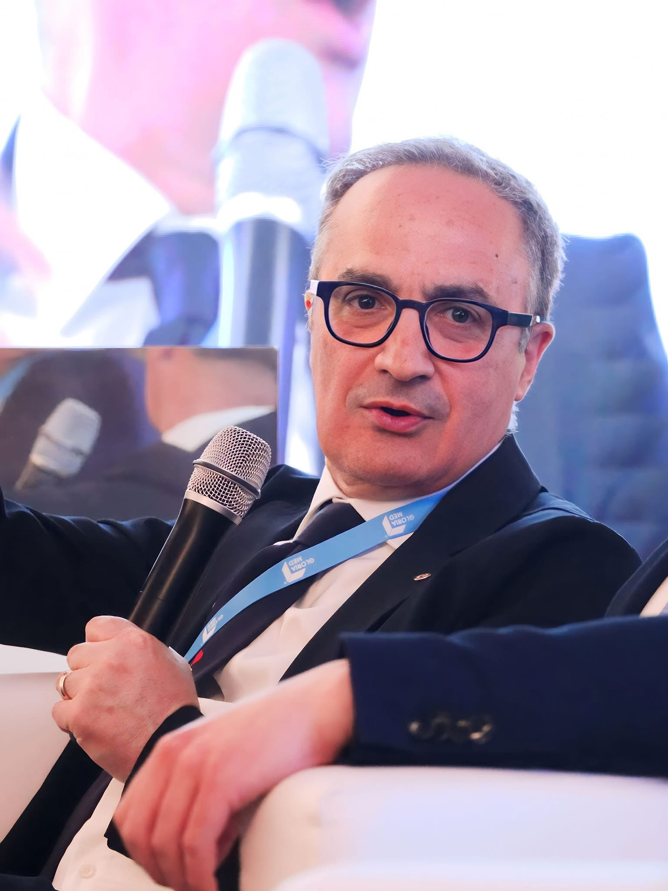

Lamezia Cuore 2025
Il battito della ricerca, il respiro della cura.
--
Giorni
--
Ore
--
Minuti
--
Secondi
Programma Scientifico
14:30
Saluti
Roberto Ceravolo
14:15
introduce
Paola Paone
I° SESSIONE - VITA DI REPARTO
Moderatori
Paola Paone, Eleonora Gallelli
14:45
La cartella clinica informatizzata
Luca Torcasio
15:00
Ruolo dell’infermiere nel laboratorio di ecografia avanzata
Giuseppe Polisicchio
15:15
La rianimazione cardiopolmonare in reparto
M. Mazzei
15:30
Edema Polmonare acuto: quando l’infermiere fa la differenza
Michele Papaluca
15:30
Discutiamone
II° SESSIONE - BATTITI DI CUORE
Moderatori
Irene Torchia, A. Martorello, Carlo Barberino
15:45
L’elettrocardiogramma
Annalisa Patanè
16:00
Principi di elettrofisiologia
Giuseppe Gigliotti
16:15
Loop Recorder
Cropanese Francesco
16:30
Gestione infermieristica dell’impianto del leadleess
Francesca Galizia
16:45
Sistemi di supporto al circolo
Teresa Misericordia
Discutiamone
III° SESSIONE - NAVIGANDO TRA LE ARTERIE
Moderatori
Ivan Critelli, Ivano Marino, Ciccia Stefania
--:--
Programma non ancora pubblicato
—
--:--
—
--:--
Programma non ancora pubblicato
—
--:--
—
I Nostri Relatori

Dott. Roberto Ceravolo
Direttore scientifico, Direttore U.O.C. Giovanni Paolo II Lamezia terme (CZ), Cardiologia con Utic
Titolo Relazione:
Il battito del cuore
Dott. Roberto Ceravolo
Direttore scientifico, Direttore U.O.C. Giovanni Paolo II Lamezia terme (CZ), Cardiologia con Utic
Titolo Relazione:
Il battito del cuore
Dott. Roberto Ceravolo
Direttore scientifico, Direttore U.O.C. Giovanni Paolo II Lamezia terme (CZ), Cardiologia con Utic
Titolo Relazione:
Il battito del cuore

{kind=link}
{kind=link}